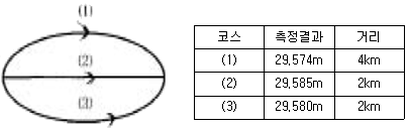
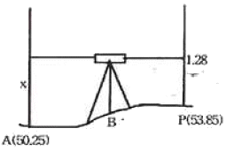
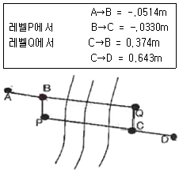
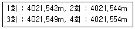
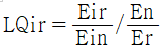
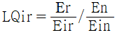
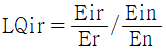
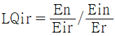

도시계획기사 (2006-05-14 기출문제)
1과목: 도시계획론
1. 다음 중 도시화 현상에 대한 설명으로 틀린 것은?
- 도시화란 비도시지역이 도시지역의 속성을 갖추게 되어가는 과정이다.
- 도시화는 도시의 수적 증가 또는 기존 도시영역의 확대에 의해 진행된다.
- 개발도상국의 도시화는 도시의 부양능력에 비해 지나치게 많은 인구가 도시로 집중하는 경향이 있다.
- 도시화는 경제발전과는 무관하게 진행된다.
(정답률: 알수없음)

2. 도시의 인구와 규모에 관한 파레토 분포함수는 R=AX-a(R : 대상도시의 인구순위, x : 그 도시의 인구, A : 순위 1인 도시의 인구, a : 도시규모분포를 결정하는 파레토 계수)로 나타난다. 이때, a=1 일면 이 나라의 세 번째로 큰 도시의 인구는?
- (3/4)A
- (2/3)A
- (1/2)A
- (1/3)A
(정답률: 알수없음)
3. 다음 중 신도시 개발에 관한 설명으로 틀린 것은?
- 시행주체에 따라 공영개발, 민간개발, 제 3섹터 개발 방식이 있다.
- 토지수용은 전면매수, 부분매수, 환지방식이 있다.
- 대상지구로는 역사적, 문화적으로 보전이 필요한 지구가 해당된다.
- 개발의 시기에 따라 단계적 개발, 전면 개발방식이 있다.
(정답률: 알수없음)
4. 다음 중 생활권 개발에 설명으로 틀린 것은?
- 생활권 개발은 도시기본계획의 생활권별 인구배분 구상을 토대로 한다.
- 생활권 개발은 시민활동범위에 따라 필요한 시설을 계층화, 계통화하여 적정 배치하는 것이다.
- 생활편익시설보다는 도시기반시설을 권역별로 개발하는 계획이다.
- 불필요한 교통발생을 최소화하고 소생활권 → 중생활권 → 대생활권으로 계층화해서 시설을 배치한다.
(정답률: 알수없음)
5. 대지로서의 효용 증진과 공공시설의 정비를 목적으로 하는 것으로, 도시 정부의 재정적 부담이 적어 1970, 80년대 도시개발에 자주 사용된 개발방식은?
- 신도시개발
- 도시재개발
- 토지구확정리사업
- 도시계획시설사업
(정답률: 알수없음)
6. 도시계획 수립시 토지이용계획의 수립목표가 아닌 것은?
- 안전성
- 형평성
- 편의성
- 경제성
(정답률: 알수없음)
7. 보전가치가 있는 특정지역의 토지소유주에게 개발권을 행사하지 못하게 하는 대신 다른 지역에서 그 개발권을 행사하게 함으로써 개인의 재산상의 손실을 보상해 주기 위해 활용하는 제도는?
- 가. 개발권양도제도
- 개발허가제도
- 도시성장관리제도
- 성과주의 지역제도
(정답률: 알수없음)
8. 도시를 하나의 시스템으로 볼 경우 그 시스템을 구성하는 3가지 하위 구성요소로 맞는 것은?
- 도시인구, 도시활동, 도시산업
- 도시인구, 도시활동, 도시문화
- 도시인구, 도시활동, 도시환경
- 도시인구, 도시활동, 도시토지 및 시설
(정답률: 알수없음)
9. 도시정부가 제공하는 서비스 중 기본적 서비스에 해당 하는 것은?
- 사회복지 관련 서비스
- 체육활동의 관련 서비스
- 전염병 예방 서비스
- 레크리에이션에 관한 서비스
(정답률: 알수없음)
10. 도시계획시설의 민간투자방식에 대한 설명으로 틀린 것은?
- BOO방식 : 시설의 준공과 동시에 국가 또는 지방자치 단체에게 소유권 귀속
- BOT방식 : 시설준공 후 일정기간 사업시행자가 소유권을 보유하고, 기간만료시 국가 또는 지방자치단체에 소유권 이전
- BTO방식 : 시설준공과 동시에 국가 또는 지방자치단체에 소유권이 귀속되며, 사업시행자에게 일정기간 시설의 관리운영권 인정
- BLT방식 : 사업시행자가 시설준공 후 정부 또는 지방자치단체에 일정기간 운영권을 임대하고 임대기간 종료 후 정부 또는 지방자치단체에 소유권 이전
(정답률: 알수없음)
11. 다음 중 도시정부의 기능이 아닌 것은?
- 환경 변화 관리자로서의 기능
- 공공시설 건설의 관리자로서의 기능
- 민간시설의 유지관리자로서의 기능
- 정보 및 기술지원자로서의 기능
(정답률: 알수없음)
12. 도시의 경제구조를 공식부문(formal sector)과 비공식부문(informak sector)의 이종적인 구조로 구분할 때 두 부문의 비교로 틀린 것은?
- 취업 : 비공식부문-용이함, 공식부문-어려움
- 운영규모 : 비공식부문-소규모, 공식부문-대규모
- 기술 : 비공식부문-노동집약적, 공식부문-자본집약적
- 시장 : 비공식부문-보호시장, 공식부문-비규제경쟁시장
(정답률: 알수없음)
13. 르 꼬르비제(Le Corbusier)의 인구 300만의 현대 도시계획안의 특징이 아닌 것은?
- 도심부의 고밀(고층)화
- 교통센터의 도시집중
- 충분한 공지와 공원의 확보
- 그린벨트의 설치
(정답률: 알수없음)
14. 듀르껭(Emile Durkheim)이 지적한 도시의 아노미(Anomie)현상에 대한 설명으로 옳은 것은?
- 도시인구가 증가함으로써 생기는 도시시설의 부족현상
- 도시화 현상에서 나타나는 사회 병리현상의 하나로서 인간 소외현상
- 도시화 과정에서 나타나는 탄산업화 현상
- 도시의 기능분화로 인하여 발생되는 도시문제
(정답률: 알수없음)
15. 현재 상주인구가 30만인 도시가 있다. 연평균 인구증가율 r=4%일 때 등차급수법으로 10년 후의 인구를 추정하면 얼마인가?
- 33만
- 40만
- 42만
- 46만
(정답률: 알수없음)
16. 다음 중 도시교통의 특성이 아닌 것은?
- 도시내의 각 지점을 연결해주는 단거리 교통이다.
- 도시교통의 효과적인 대책으로 대량 수송을 필요로 한다.
- 도시규모가 클수록 총인구에 대한 CBD 진입인구비가 높다.
- 도시교통은 일정시간에 걸쳐 첨두현상이 발생한다.
(정답률: 알수없음)
17. 다음 중 계획된 신도시(New Town)가 아닌 것은?
- 브라질의 Brasilia
- 호주의 Canberra
- 미국의 Los Angeles
- 영국의 Cumbernauld
(정답률: 알수없음)
18. 다음 중 시민참여의 대한 설명으로 맞는 것은?
- 시민참여의 대상은 도시정부의 입장에서 결정한다.
- 시민참여란 도시행정에 의한 민중조작이다.
- 일반시민이 공적 결정권이 부여된 도시정부의 정책결정에 권력을 행사하는 과정이다.
- 시민참여의 대상은 모든 도시행정 사무에까지 보장되어야 한다.
(정답률: 알수없음)
19. 1945년 해리스(C. D. JHarris)와 울만(E. L. Ullman)이 한 도시의 토지이용상태는 동심원구조나 선형구조로 이루어지는 것이 아니고 도시공간 내의 수 개의 특징적인 소핵심을 주변으로 토지이용이 결정된다고 주장한 이론은?
- 다원화이론
- 다양화이론
- 다핵심이론
- 부도심이론
(정답률: 알수없음)
20. 도시화의 단계에 있어서 대도시지역보다는 중소도시지역의 인구증가가 두드러지게 나타나는 현상으로 전통적인 도시화의 하나의 전환점으로 간주되는 현상은?
- 집중적 도시화
- 분산적 도시화
- 역도시화
- 교외화와 대도시권화
(정답률: 알수없음)
2과목: 도시설계 및 단지계획
21. 체육시설의 구조 및 설치기준으로 틀린 것은?
- 체육시설은 국제적으로 통용되는 규격으로 설치하되, 규모는 시ㆍ군의 여건에 따라 적정하게 정한다.
- 체육시설에는 기능에 따라 관중석, 관리시설, 편익시설을 설치한다.
- 도시지역외에 설치하는 체육시설용지는 원칙적으로 전체부지 면적의 60$ 미만으로 한다.
- 체육시설에는 어떠한 경우에도 수익시설을 설치할 수 없다.
(정답률: 알수없음)
22. 생활권 계획의 기본목표 중 사회적 측면이 아닌 것은?
- 위계에 따른 공공편익시설의 적절한 배치로 주민이용의 편리성을 도모한다.
- 동질성을 갖는 지역공동체를 형성하며 이웃간의 면식과 상호간의 교류를 촉진한다.
- 차량중심의 생활권 형성을 통하여 주민의 접근성과 편의성을 도모한다.
- 주민간의 동질의식 함양 및 지역사회에 대한 소속감을 고취한다.
(정답률: 알수없음)
23. 단독주택지 획지규모의 결정요인으로서 적합하지 않은 것은?
- 주택구입가능 소득계층의 주택구입 수요전망에 의한 적정 규모
- 가국원수와 가구유형에 따른 쾌적한 주거수준
- 법적규제사항
- 주택단지 전체의 면적규모
(정답률: 알수없음)
24. 다음 중 공업지역의 적지조건에 해당되지 않는 것은?
- 교통, 용수, 노동력의 편의를 얻을 수 있는 지역
- 평탄하고 지가가 저렴하며 넓은 지역
- 근린주구와 연속된 지역
- 쓰레기 처리가 용이한 지역
(정답률: 알수없음)
25. 노외조차장의 구조 및 설비기준에서 출입구가 2개 이상인 경우 직각주차형식의 최소 차로 너비는?
- 3m
- 6m
- 3.5m
- 4.5m
(정답률: 알수없음)
26. 게토(Ghetto)란 어떤 지역을 의미하는가?
- 불량주택지역
- 특정집단거주지역
- 무허가 주거지역
- 노후지역
(정답률: 알수없음)
27. 일반적인 공업단지의 공간 구성을 위한 기본방향이 아닌 것은?
- 생산공정을 고려하여 생산성을 극대화 할 수 있도록 생산공간 배치를 한다.
- 주생산, 연관생산 공간의 합리적인 배치로 생산과정의 계열화를 도모한다.
- 단지 내 영세 중소기업을 위한 임대공장, 아파트형 공장부지를 확보한다.
- 생산공간과 연구개발 공간을 독립적으로 분리한다.
(정답률: 알수없음)
28. 다음 중 경관분석의 방법이 아닌 것은?
- 메쉬(mesh)에 의한 방법
- 그린 매트릭스(green matrix) 시스템
- 시각회랑(visual corridor)에 의한 방법
- 기호화 방법
(정답률: 알수없음)
29. 다음 중 단지계획의 접근방법과 이론가의 연결이 잘못된 것은?
- 생태적 접근 - McHarg
- 행태적 접근 - Altman
- 미학적 접근 - Chapin
- 심리적 접근 - E.T.Hall
(정답률: 알수없음)
30. 어린이공원의 규모 및 유치거리 기준으로 옳은 것은?
- 3,000m2 이상, 300m 이하
- 2,500m2 이상, 300m 이하
- 2,000m2 이상, 250m 이하
- 1,500m2 이상, 250m 이하
(정답률: 알수없음)
31. 급경사지의 주택단지계획에 관한 설명으로 틀린 것은?
- 주거동을 등고선과 관계없이 배치한다.
- 남향(南向)의 급경사일 경우 주출입구를 2~3층에 설치한다.
- 동ㆍ서면의 급경사일 경우 계단식으로 고ㆍ저차를 두어 배치한다.
- 도로망은 자동차 위주의 주진입로를 위하여 등고선에 평행하도록 계획한다.
(정답률: 알수없음)
32. C.A.Perry가 주장한 근린주구개념에 의한 초등학교의 적정 유치거리는?
- 200~400m
- 400~800m
- 800~1200m
- 1200~1500m
(정답률: 알수없음)
33. 단지의 토지이용 밀도 결정에 가장 큰 영향 요인은?
- 공지율
- 도로율
- 용적율
- 호수밀도
(정답률: 알수없음)
34. 슈퍼 블록(super block)에 대한 설명으로 틀린 것은?
- 블록 내부에 큰 오픈스페이스(open space)를 만들 수 있다.
- 대형가구의 내부에 교통량을 증대시키는 경향이 있다.
- 주거환경의 쾌적성을 높일 수 있다.
- 레드번(Radburn)계획은 슈퍼블록으로 계획된 것이다.
(정답률: 알수없음)
35. 건축법규정에 의한 높이제한이 30m일 때 공개공지를 확보한 경우 당해 건축물에 적용되는 높이기준이 얼마까지 완화될 수 있는가?
- 30m 이하
- 32m 이하
- 36m 이하
- 39m 이하
(정답률: 알수없음)
36. 단지개발 기법으로 옳지 않은 것은?
- 가. 기존의 자연지형을 최소한도로 변형시켜 건물을 입지 시킨다.
- 기존의 식생을 최대한 보전할 수 있도록 건물을 입지 시킨다.
- 건물과 건물사이의 간격은 일조ㆍ채광ㆍ통풍 등을 고려하여 적절한 거리를 유지하도록 한다.
- 태양열의 이용을 최대로 하기 위해 가급적 수목의 배식 비율을 줄인다.
(정답률: 알수없음)
37. 다음 중 지표배수(地表排水)의 경사 결정에 영향이 가장 적은 것은?
- 배수량
- 홍수의 유수량
- 토성
- 우수의 유수량
(정답률: 알수없음)
38. 다음 중 단지계획의 목표가 아닌 것은?
- 인간이 쾌적하고 건강한 생활을 하도록 필요한 조건을 갖추어야 한다.
- 주거환경의 수요자인 주민의 요구를 반영해야 한다.
- 양호한 환경을 형성하기 위해 단지의 입지결정에 신중하여야 한다.
- 최대한 고층화만이 개발경제성을 높일 수 있다.
(정답률: 알수없음)
39. 택지개발에 있어 택지의 절대적 부족원인 아닌 것은?
- 인구의 도시집중
- 사회생활환경의 평준화
- 공업생산의 증대와 기구확장
- 인구의 자연증가 및 핵가족화
(정답률: 알수없음)
40. 주거단지계획에 대한 설명으로 틀린 것은?
- 주호군에서는 원칙적으로 사람과 차량의 통과동선을 허용하지 않고 보ㆍ차도를 분리한다.
- 국지도로에서 보ㆍ차분리도로의 보도폭은 1m로 하고, 단독주택지 가구(block)를 형성하는 도로는 4m로 한다.
- 단지의 오픈스페이스는 구상단계부터 어린이공원, 보행자전용도로, 학교 등과 연결시킨다.
- 노인을 위한 주거나 저소득층의 주거환경은 가능한 공공의 공간을 건물 내ㆍ외부의 곳곳에 마련하여 사회적 접촉의 기회를 높인다.
(정답률: 알수없음)
3과목: 도시개발론
41. 지형의 표시법을 올바르게 설명한 것은?
- 음영법-등고선의 사이를 같은 색으로 칠하여 색으로 표고를 구분하는 방법
- 우모선법-짧고 거의 평행한 선을 이용하여 선의 간격, 굵기, 길이, 방향 등에 의하여 지형의 기복을 표시하는 방법
- 채색법-특정한 곳에서 일정한 방향으로 평행광선을 비칠 때 생기는 그림자를 바로 위에서 본 상태로 기복의 모양을 표시하는 방법
- 등고선법-측정에 숫자를 기입하여 지형의 높낮이를 표시하는 방법
(정답률: 알수없음)
42. 우리나라의 1/25.000 지형도에서 간곡선에 대한 설명으로 옳은 것은?
- 가는 파선이고 5m 간격이다.
- 가는 파선이고 10m 간격이다.
- 가는 실선이고 5m 간격이다.
- 가는 실선이고 10m 간격이다.
(정답률: 알수없음)
43. A, B 두점간의 고저차를 구하기 위하여 그림과 같이 (1), (2), (3) 코스로 수준측량한 결과가 다음과 같을 때 두 점간의 고저차에 대한 최확값은?

- 29.567m
- 29.581m
- 29.569m
- 27.578m
(정답률: 알수없음)
44. 평판측량에 관한 다음 사항 중 옳지 않은 것은?
- 평판측량은 보통 방사법, 전진법, 교회법 등의 방법을 병용하는 것이 능률적이다.
- 폐합오차의 허용 범위는 도면 위에서
 mm 이내이다.(n:트래버스변의 수)
mm 이내이다.(n:트래버스변의 수) - 평판측량에서 결과에 가장 영향을 주는 오차는 중심맞추기 오차(구심오차)이다.
- 오차는 거리에 비례하여 배분한다.
(정답률: 알수없음)
45. 평판측량에서 중심맞추기 오차(편심거리)를 30mm, 도상위치 오차를 0.2mm로 할 때 축척한계는?
- 1/100
- 1/150
- 1/300
- 1/600
(정답률: 알수없음)
46. 오차의 설명 중 틀린 것은?
- 과대오차는 관측자의 부주의나 측량방법을 잘못 적용함으로써 나타나는 과실 또는 착오의 결과이다.
- 크기와 방향을 알 수 있는 오차를 정오차라 한다.
- 정오차는 상차라고도 한다.
- 우연오차는 발생빈도, 크기, 부호 등을 전혀 알 수 없으며 예측할 수도 없는 무작위성 오차이다.
(정답률: 알수없음)
47. 직접법으로 등고선을 관측하기 위하여 B점에 레벨을 세우고 표고가 53.85m인 P점에 세운 표척을 시준하여 1.28m를 얻었다. 50.25m인 등고선 위의 점 A를 정하려면 시준하여야 할 표척의 높이는?

- 1.28m
- 2.32m
- 3.60m
- 1.88m
(정답률: 알수없음)
48. 그림과 같이 A점에서 D점에 이르는 도중 폭 약 300m의 하천이 있어서 P점 및 Q점에 레벨을 설치하여 교호 수준 측량을 실시하였다. A점으로부터 D점에 이르는 각 측점에서 전후 표척의 독치차가 다음과 같을 때 D점의 표고는? (단, A의 표고는 30m이다.)

- 29.777m
- 30.481m
- 31.509
- 32.519m
(정답률: 알수없음)
49. 등고선에 관한 다음 설명 중 틀린 것은?
- 등고선 간의 최단거리 방향은 최대 경사방향을 나타낸다.
- 높이가 다른 등고선은 절대로 서로 교차하지 않는다.
- 등고선이 도면 내에서 폐합하는 경우 등고선의 내부에는 산꼭대기 또는 분지가 있다.
- 등고선은 분수선과 직각으로 만난다.
(정답률: 알수없음)
50. 삼각망에 대한 특징을 잘못 설명한 것은?
- 단열삼각망은 같은 거리에 대하여 촉점수가 가장 적으므로 측량은 간단하여 경제적이나 조건식의 주가 적어서 정밀도가 낮다.
- 사변형삼각망은 조건식의 수가 많아서 다른 삼각망에 비해 정밀도가 가장 높다.
- 유심삼각망은 면적이 넓고 광대한 지역의 측량에 좋다.
- 사변형삼각망은 폭이 좁고 길이가 긴 도로, 하천, 철도 등의 측량을 시행할 경우에 주로 사용된다.
(정답률: 알수없음)
51. 토탈스테이션(T.S)을 사용하여 길이 6500m인 측선을 측설할 때 거리에는 오차가 없고 방향에 5“ 의 오차가 있다면 이로 인한 위치 오차는?
- 15.2cm
- 15.8cm
- 16.4cm
- 16.9cm
(정답률: 알수없음)
52. 다음은 전자파 거리 측정기를 사용하여 측정한 결과이다. 교차의 제한을 10mm+D×2mm(D:km 단위)로 할 경우 다음 중 옳은 것은? (단. D는 4km임)

- 1회만 재측한다.
- 1회와 2회를 재측한다
- 4회만 재측한다.
- 재측할 필요가 없다.
(정답률: 알수없음)
53. 수준기의 관형 기포관 눈금을 8눈금 이동하였더니, 60m 떨어진 표척의 읽음값이 0.046m 변화하였다. 이 수준기의 감도는?
- 10“
- 20“
- 30“
- 40“
(정답률: 알수없음)
54. 두 점간의 고저차를 구하기 위하여 경사거리 30.0m±20cm, 경사각 15° 30‘의 값을 얻었다. 경사거리와 경사각이 고저차 결정의 독립변수로 작용할 때 고저차의 오차는?
- ±5.3cm
- ±10.5cm
- ±15.8cm
- ±27.6cm
(정답률: 알수없음)
55. 특별기준면에 대한 설명으로 옳은 것은?
- 섬이나 하천에서 사용하기 위해 따로 만든 기준면
- 특별히 높은 정확도의 측량으로 만든 기준면
- 서울특별시 건설에 사용되는 기준면
- 우리나라 5개 수준면 중 대표가 되는 기준면
(정답률: 알수없음)
56. 표준오차를 이용하여 표시한 최확값이 400.00±0.02m일 때 확률오차를 이용한 정확도는 약 얼마인가?
- 1/10.000
- 1/20.000
- 1/30.000
- 1/40.000
(정답률: 알수없음)
57. 다음 중 경거 및 위거의 직접적인 용도가 가장 거리가 먼 것은?
- 실측도의 좌표계산
- 오차 및 정확도의 계산
- 측점의 표고계산
- 오차의 합리적 배분
(정답률: 알수없음)
58. 축척 1/500 지형도를 기초로 하여 축척 1/3000의 지형도를 제작하고자 한다. 1/3000 지형도 1도엽은 1/500 지형도를 몇 매 포함한 것인가?
- 45매
- 40매
- 36매
- 25매
(정답률: 알수없음)
59. 트래버스측량의 각 관측 결과 기하학적 조건과 비교하여 허용오차 이내일 경우의 오차배분에 대한 설명 중 잘못된 것은?
- 각 관측의 정확도가 같을 때는 오차를 각의 대소에 관계없이 등분하여 배분한다.
- 각 관측의 경중률이 다를 경우에는 그 오차를 경중률에 따라 배분한다.
- 각 관측은 경중률이 같을 경우에는 각의 크기에 비례하여 배분한다.
- 변길이의 역수에 비례하여 각 관측각에 배분한다.
(정답률: 알수없음)
60. 평면측량(국지측량)에 대한 정의를 가장 적합한 것은?
- 대지측량을 제외한 측량
- 측량법에 의하여 측량한 결과가 작성된 성과
- 측량할 구역을 평면으로 간주할 수 있는 국지적 범위의 측량
- 대지측량에 비하여 비교적 좁은 구역의 측량
(정답률: 알수없음)
4과목: 국토 및 지역계획
61. 우리 나라의 국토 및 지역계획의 특징이 아닌 것은?
- 하향식 접근 방식에 가깝다.
- 명령적 계획의 특성을 갖는다.
- 다목적 계획이라 할 수 있다.
- 물리적 성격이 강한 계획이다.
(정답률: 알수없음)
62. 1970년대 신 인간주의(New Humanism)에 기초하여 발전된 교류적 계획(transactive planning)에 기초하여 발전된 교류적 계획(transactive planning)과 관련이 없는 것은?
- 프리드만(John Friedmann)
- 계획가와 피계획가간의 상호학슴 과정
- 인간의 존엄성 강조
- 총체주의(Synopticism)
(정답률: 알수없음)
63. 다음 중 지역계획의 설명으로 틀린 것은?
- 지역문제를 개선ㆍ해결하기 위하여 설계된 연속활동
- 지역개발을 계획적이고 체계적이며 지속적으로 유도하는 활동
- 일정 행정구역 내의 지역문제만을 대상으로 하는 공간계획
- 지역주민들의 삶의 질(Quality of Life) 향상을 위한 국토 및 지역자원의 적정한 이용, 개발, 보전계획
(정답률: 알수없음)
64. 한센(N.Hansen)의 동질지역 구분에 해당되지 않는 것은?
- 낙후지역
- 침체지역
- 과밀지역
- 중간지역
(정답률: 알수없음)
65. 결절지역(nodal region)의 권역설정과 관계가 가장 먼 것은?
- 통근
- 통학
- 인구밀도
- 상품의 흐름
(정답률: 알수없음)
66. A와 B지역간의 경계를 레일리(Reilly, W.)법칙에 의해 확정할 때, A에서 분계점까지의 거리는? (단, A-B간 거리 : 120km, A지역 인구 : 40만면, B지역 인구 : 160만명)
- 24km
- 30km
- 40km
- 50km
(정답률: 알수없음)
67. 성장거점모형에서 경제공간의 지리적 공간으로의 변환을 최초로 설명한 학자는?
- 페로(Perroux. F.)
- 보데빌(Boudville. J.)
- 미르달(Myrdal. G.)
- 허쉬만(Hirschman. A.)
(정답률: 알수없음)
68. 수도권정비계획에 관한 설명으로 틀린 것은?
- 수도권이라함은 서울특별시와 인천광역시, 경기도가 포함된 지역을 자칭한다.
- 수도권정비계획권역내에서 과밀부담금은 건축비의 100분의 10을 원칙으로 한다.
- 수도권정비계획에서 수도권은 과밀억제권역, 성장관리권역, 자연보전권역으로 구분되어 있다.
- 수도권정비계획은 수도권안에서의 다른 법령에 의한 모든 토지이용, 개발계획에 우선한다.
(정답률: 알수없음)
69. 월리암슨(Williamson)의 경제발전과 지역 소득격차와의 상관관계에 대한 설명 중 지역 소득격차의 요인이 아닌 것은?
- 농촌지역의 유망한 청년들이 대도시로 몰려드는 현상
- 낙후된 농촌을 지원하는 정부의 경제정책
- 기술적 쇄신 등을 경제 후발지역에 파급시킬 수 있는 지역간 연계의 부족
- 성장지역으로만 집적되는 자본
(정답률: 알수없음)
70. 미국의 표준대도시통계지역(SMSA)에 대한 설명으로 틀린 것은?
- 일종의 동질지역(Homogeneous Area)이다.
- 미국 연방정부에서 센서스나 기타 통계에서 흔히 사용하는 지역이다.
- 하나 또는 그 이상이 중심도시와 그 중심도시에 일정한 비율이상의 출퇴근자를 갖는 주변 군으로 구성된 지역이다.
- 노동시장(Labor Market)이라는 관점에서 확정된 지역임
(정답률: 알수없음)
71. 중심지 이론(Central place theory)의 적용이 가장 적합한 지역은?
- 평야지역
- 공업지역
- 공산지역
- 관광지역
(정답률: 알수없음)
72. 제 3차 국토종합개발계획의 기본목표가 아닌 것은?
- 지방분산형 국토 골격의 형성
- 남북통일에 대비한 국토기반의 조성
- 국민복지 향상과 국토환경의 보전
- 국민생활의 형평화
(정답률: 알수없음)
73. 다음 중 국토계획의 성격으로 옳은 것은?
- 지침제시형 장기계획으로 물적ㆍ기술적 측면과 경제ㆍ사회적 측면이 모두 포함된다.
- 토지이용 중심의 공간구조계획을 세밀히 다룬다.
- 평면적 토지이용은 물론 입체적인 형태까지도 규정한다.
- 단기계획으로 기술적인 측면이 중시된다.
(정답률: 알수없음)
74. 지역계획수립과정에 있어 상향식(Bottom up) 방식의 특징으로 옳은 것은?
- 지역주민 의견의 실제적 수렴
- 개발 파급효과의 가속
- 국토공간의 통일성 부여
- 계획의 신속한 수립과 집행
(정답률: 알수없음)
75. 다음 중 입지상법(Location Quotient)의 계산공식으로 맞는 것은? (단, LQir : r 지역의 I 산업에 대한 입지상 계수, Eir : 지역의 I 산업의 경제활동, Er : r 지역의 전체 경제활동, Ein : n 지역(n=∑r 즉, n은 전체지역)의 I 산업의 경제활동, En : n 지역의 전체 경제활동)




(정답률: 알수없음)
76. 개발촉진지구지정에 관한 설명으로 틀린 것은?
- 건설교통부 장관은 개발수준이 낮아 개발이 필요하다고 인정될 경우에는 광역시장 또는 도지사의 요청을 받아 개발촉진지구를 지정할 수 있다.
- 건설교통부 장관은 개발촉진지구를 지정하는 경우 지역 총생산 또는 재정자립도 등을 고려하여 최소한의 범위내에서 지정하여야 한다.
- 개발촉진지구지정기간이 경과한 때에는 그 기간 만료일부터 개발촉진지구의 지정이 해제된 것으로 본다.
- 수도권정비계획법에 의해 수도권에는 개발촉진지구를 지정할 수 없다.
(정답률: 알수없음)
77. 로렌츠 곡선(Lorenz curve)이 지역계획 수립시에 활용 되는 경우는?
- 지역간 인구이동의 분석 및 예측시
- 국민소득의 지역간 분포격차 분석시
- 지역인구의 성별, 연령별, 인구구조분석시
- 지역적인 차원에서의 산업부문간 경제활동의 상호 의존 관계 분석시
(정답률: 알수없음)
78. 웨버(A. Weber)의 공업입지이론에서 입지결정 인자에 해당되지 않는 것은?
- 운송 비용
- 노동 비용
- 집적(agglomeration)
- 제품 수요
(정답률: 알수없음)
79. 우리나라 국토 및 지역계획의 공간체계 중 해당계획과 공간 영향크기가 잘못 짝지어진 것은?
- 국토종합개발계획-전국계획
- 광역개발계획-지역계획
- 오지개발계획-지방계획
- 취락구조개선사업계획-지역사회계획
(정답률: 알수없음)
80. 후버-피셔의 지역발전 5단계 중 세 번째 단계에 해당하는 것은?
- 2차 산업의 도입단계
- 수출용 3차산업 전문화 단계
- 1차 산업 전문화 및 지역간 교역의 단계
- 다양한 공업화의 이행단계
(정답률: 알수없음)
5과목: 도시계획관계법규
81. 국토기본법상 국토종합계획의 내용으로 직접 명시하지 않은 것은?
- 국토발전의 기본이념 및 바람직한 국토 미래상의 정립에 관한 사항
- 문화, 관광자원개발에 관한 사항
- 주택, 상ㆍ하수도 등 생활여건의 조성에 관한 사항
- 지하공간의 합리적 이용 및 관리에 관한 사항
(정답률: 알수없음)
82. 수도권정비계획법상에서 규정하는 내용으로 틀린 것은?
- 건설교통부장관은 인구집중유발시설에 대해서는 총량규제를 정하여 신설, 증설을 제한 할 수 있다.
- 도시 및 주거환경정비법에 의한 도시환경정비사업에 따른 건축물은 과밀부담금을 감면할 수 있다.
- 과밀부담금은 건축비의 100분의 10으로 하되 지역별 여건을 감안하여 대통령이 정하는 바에 따라 100분의 5까지 조정할 수 있다.
- 광역적 기반시설의 설치비용은 지방자치단체장이 직접 사업시행자에게 부담시킬 수 있다.
(정답률: 알수없음)
83. 공동주택의 입주자 또는 관리주체가 대통령령이 정하는 기준ㆍ절차 등에 따라 시장ㆍ군수ㆍ구청장의 허가를 받거나 신고를 해야 하는 행위가 아닌 것은?
- 공동주택을 사업계획에 따른 용도로 사용하는 행위
- 공동주택을 신축ㆍ증축ㆍ개축ㆍ대수선 또는 리모델링하는 행위
- 공동주택의 효율적 관리에 지장을 주는 행위로서 대통령령이 정하는 행위
- 공동주택을 파손 또는 훼손하거나 당해 시설의 전부 또는 일부를 철거하는 행위
(정답률: 알수없음)
84. 택지개발예정지구로 지정한 날로부터 몇 년 이내에 택지개발계획의 승인 신청을 하지 않으면 건설교통부장관은 그 지정을 해제할 수 있는가?
- 2년
- 3년
- 5년
- 10년
(정답률: 알수없음)
85. 국토의 계획 및 이용에 관한 법령상 시가화조정구역 내에서 설치할 수 없는 것은?
- 공공도서관
- 소방파출소
- 종합병원
- 농협의 공동구판장
(정답률: 알수없음)
86. 다음 중 산업단지개발사업에서 종래의 시설이 사업시행자에게 무상으로 귀속되고, 새로이 설치한 시설은 국가 또는 지방자치단체에 무상으로 귀속되는 공공시설의 범위에 해당되지 않는 것은?
- 도로
- 하천
- 하수도
- 쓰레기소각장
(정답률: 알수없음)
87. 도시 및 주거환경정비법에서 도시재개발 사업 시행시 관리처분계획인가의 고시 루 분양신청자에게 통지할 내용이 아닌 것은?
- 정비사업의 종류 및 명칭
- 정비사업시행구역의 면적
- 사업시행의 예산내역
- 관리처분계획의 인가일
(정답률: 알수없음)
88. 주차장법에서 단지조성사업 등을 하는 경우에는 일정규모이상의 노외주차장의 설치를 의무화하고 있다. 여기에 해당하는 단지조성사업이 아닌 것은?
- 도시재개발사업
- 도시철도건설사업
- 산업단지개발사업
- 관광지조성사업
(정답률: 알수없음)
89. 국토의 계획 및 이용에 관한 법령상 도시계획위원회에 관한 설명으로 틀린 것은?
- 중앙도시계획위원회 위원장은 위원 중에서 건설교통부 장관이 임명한다.
- 시ㆍ도 도시계획위원회의 위원장은 당해 지방자치단체의 부시장 또는 부지사가 된다.
- 중앙도시계획위원회 각 분과위원회는 위원장 1인을 포함한 5인 이상 17인 이하의 위원으로 구성한다.
- 중앙도시계획위원회 위원의 임기는 3년으로 하되, 연임할 수 없다.
(정답률: 알수없음)
90. 국토기본법상 국토관리의 기본이념으로 옳지 않는 것은?
- 국토를 균형있게 발전시킴
- 국민의 삶의 질을 개선
- 국토의 지속가능한 발전 도모
- 지속적인 산업발전을 촉진
(정답률: 알수없음)
91. 다음 건축물 중 건축법이 적용되는 것은?
- 문화재보호법에 의한 지정문화재
- 컨테이너를 이용한 간이 판매시설
- 고속도로 통행료 징수시설
- 철도 선로부지안에 있는 플랫트층
(정답률: 알수없음)
92. 도시공원 및 녹지 등에 관한 법률상 생활권공원 및 주제공원에 해당되지 않는 것은?
- 묘지공원
- 근린공원
- 자연공원
- 어린이공원
(정답률: 알수없음)
93. 국토의 계획 및 이용에 관한 법률상 도시관리계획을 입안 하고자 할 경우, 도시관리계획도서 중 계획도의 축척과 백도(basemap)의 종류로 적당한 것은?
- 1천분의 1 지형도
- 6백분의 1 지적도
- 1만분의 1 수치지형도
- 1천2백분의 1 항공측량도
(정답률: 알수없음)
94. 국토의 계획 및 이용에 관한 법령상 도시계획시설 사업의 단계별집행계획에 관한 기술 중 틀린 것은?
- 특별시장ㆍ광역시장ㆍ시장 또는 군수는 도시계획시설에 대하여 도시계획시설결정의 고시일로부터 2년 이내에 대통령령이 정하는 바에 따라 재원조달계획ㆍ보상계획 등을 포함하는 단계별집행계획을 수립하여야 한다.
- 특별시장ㆍ광역시장ㆍ시장 또는 군수는 규정에 의하여 단계별집행계획을 수립하거나 송부받은 때에는 건성교통부령이 정하는 바에 따라 7일 이내에 공고하여야 한다
- 건설교통부장관 또는 도지사가 직접 입안한 도시관리계획인 경우 건설교통부장관 또는 도지사는 단계별집행계획을 수립하여야 한다.
- 단계별집행계획은 제1단계집행계획과 제2단계집행계획으로 구분하여 수립하되, 3년 이내에 시행하는 도시계획시설사업은 제1단계집행계획에 포함되도록 하여야 한다.
(정답률: 알수없음)
95. 도시계획시설의 결정ㆍ구조 및 설치기준에 관한 규칙에서 정한 용도지역별 도로율이 틀린 것은?
- 주거지역 : 20%이상 - 30% 미만
- 상업지역 : 25%이상 - 35% 미만
- 공업지역 : 10%이상 - 20% 미만
- 녹지지역 : 5%이상 - 15% 미만
(정답률: 알수없음)
96. 수도권정비계획법의 대규모 개발사업에 대한 설명으로 적절하지 않은 것은?
- 100만 제곱미터 이상의 주택지조성사업
- 30만 제곱미터 이상의 공장 설립을 위한 공장용지조성사업
- 관광지조성사업으로서 시설계획지구의 면적이 30만 제곱미터 이상인 사업
- 100만 제곱미터 이상의 복합단지개발사업
(정답률: 알수없음)
97. 국토의 계획 및 이용에 관한 법령상 지구단위계획 중 관계행정기관의 장과의 협의, 건설교통부장관과의 협의 및 중앙도시계획위원회 또는 지방도시계획위원회의 심의를 거치지 아니하고 지구단위계획을 변경할 수 없는 것은?
- 획지면적의 50퍼센트 이내의 변경인 경우
- 건축물 높이의 20퍼센트 이내의 변경인 경우
- 건축선의 1ㅂ미터 이내의 변경인 경우
- 가구면적의 10퍼센트 이내의 변경인 경우
(정답률: 알수없음)
98. 주차장법의 노상주차장에서 제한하는 주차행위가 아닌 것은?
- 하역주차구획에 긴급자동차를 주차하는 행위
- 자동차별 주차시간이 제한되어 있는 경우에 그 제한시간을 초과하여 주차하는 행위
- 주차장 안의 지정된 주차구획 외에 주차하는 행위
- 주차장을 주차장 외의 목적으로 이용하는 행위
(정답률: 알수없음)
99. 체육시설의 설치ㆍ이용에 관한 법률에 의한 공공체육시설에 해당하지 않는 것은?
- 전문체육시설
- 생활체육시설
- 직장체육시설
- 재활체육시설
(정답률: 알수없음)
100. 국토의 계획 및 이용에 관한 법령상 기반시설에 해당되지 않는 것은?
- 유원지
- 사회복지시설
- 청소년수련시설
- 노유자시설
(정답률: 알수없음)